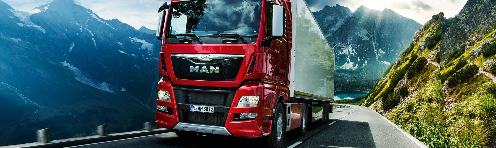
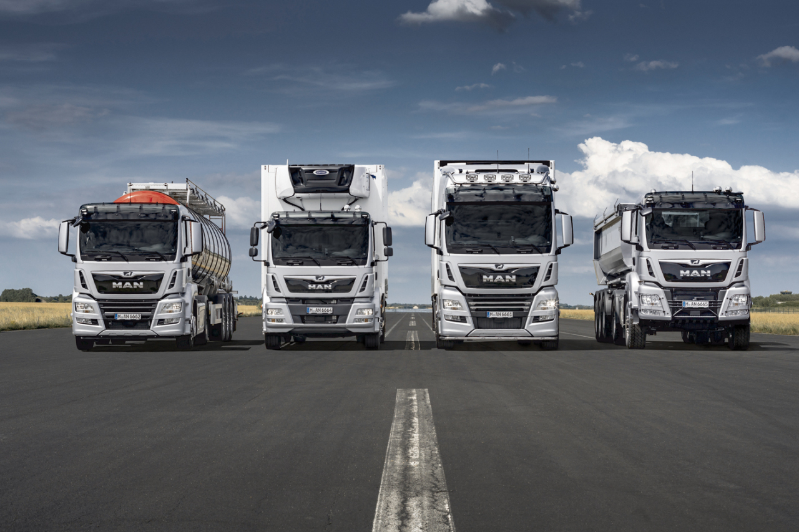

Work Experience 3
Production Management Intern at MAN Trucks

Overview:
In the summer of 2018, MAN Trucks India shortlisted me for the Production Management Intern position. It is a manufacturing facility for the
best in class german trucks for the Asia Pacific region. It was my second work experience at this plant. After 4 years, I really enjoyed the nostalgia
brought on by this experience. Many things changed but the layout was the same. They added up new high-tech machineries, installed
5-6 different production lines for new models and developed a new training division for production. It was exciting!
As I was already familiar with this company, my team assigned me an important task with a hard deadline of 45 days.
The company was going through a major transition for new product development. And my assigned work was
very crucial for implementing those new projects and save thousands of dollars. Before delving further into that project,
I'd like to tell you more about the company.
MAN (Maschinenfabrik Augsburg- Nürnberg) SE, formerly MAN AG, is a German mechanical engineering company and parent
company of the MAN Group. MAN SE is based in Munich. Its primary output is for the automotive industry, particularly
heavy trucks. Further activities include the production of diesel engines for various applications, like ship propulsion,
and also turbo machinery.
MAN supplies trucks, buses, diesel engines and turbo machinery. The company celebrated its 250th anniversary in 2008.
The company operates through fully owned subsidiaries or joint ventures with local companies in India, Poland, Turkey,
China, United States, United Arab Emirates, South Africa, Uzbekistan, Portugal and Germany/Austria. In India, MAN Trucks
India Pvt. Ltd., a 100% subsidiary of MAN Truck & Bus AG, Germany, manufactures heavy trucks and buses, both for the
Indian market as well as for export to Asian, the Middle East and African countries. The MAN CLA range of products
manufactured by MAN Trucks India has made a mark not only in India but also has a significant presence in around 25
countries.
MAN Trucks India started its operations in 2006 to cater the country’s requirement for high-quality transport solutions.
Our aim is to manufacture excellent quality products by creating a safe, clean and environmently friendly workplace.” The
Pithampur manufacturing plant in Madhya Pradesh has been producing trucks for the Indian market and for export to countries
in Asia and Africa since 2006. Its products range from chassis to tippers for the construction industry and semitrailer
tractors for long haul transport. By acquiring full ownership, MAN Truck & Bus India has now taken sole responsibility
for the production and sale of the trucks both within and outside India. Truck in the Box. As the name suggests, Truck
in the Box TIB is the MAN concept for CKD (Completely knocked down) or SKD (Semi knocked down) vehicles – i.e. the
disassembly of a vehicle in order to ship it to another site for final assembly.
Roles & Responsibilities:
- Optimized the axle line layout using AutoCAD to reduce material handling cost, improve throughput, minimize space requirements
and lower energy bills within 30 days.
- Implemented a one-piece flow of material from start to finish with as little WIP inventory for front and rear axle line.
- Reduced the storage racks to confine the machines and working table in an optimal or near optimal area for making
space for new projects.
- Observed and scrutinized the complete assembly processes for the axle line along with the preparation of sub-assemblies.
- Optimize the current material storage systems for the Front and Rear Axle with consideration of the protection, storage,
and control of materials throughout their manufacturing, warehousing, distribution, consumption, and disposal.
- Improved material handling to create time and place utility through the handling, storage, and control of material,
as distinct from manufacturing, which creates form utility by changing the shape, form, and makeup of the material.
Material organization has been integral to the design of most production systems since the efficient flow of material between
the activities of a production system is heavily dependent on the arrangement (or layout) of the activities. If two activities
are adjacent to each other, then material might easily be handed from one activity to another. If activities are in sequence,
a conveyor can move the material at low cost and make space for new machines or projects.
